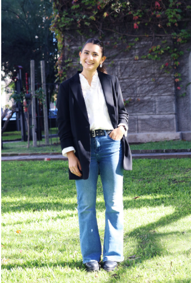
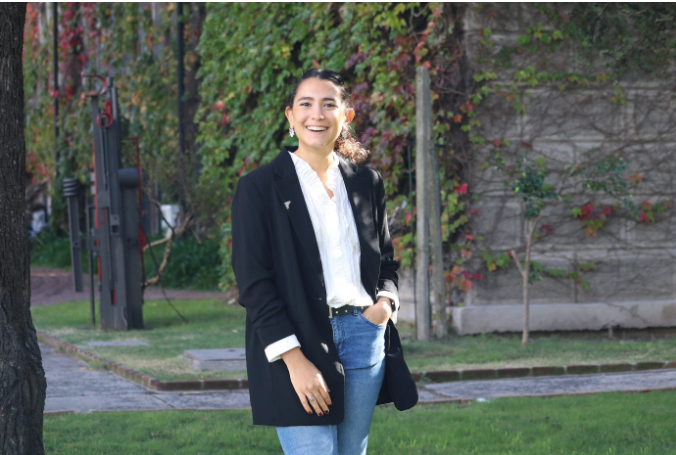
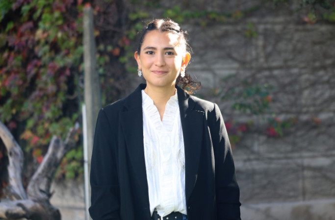

La historia de Kariné Keuroglian Koyounian y Keuro muestra algo clásico y poderoso: una buena formación no fabrica destinos; entrega herramientas, vínculos y carácter para construirlos.
Formación humanaEmprendimientoDiseñoComunidad Crandon

Keuro Carteras y accesorios con estética, funcionalidad y memoria personal.
Lectura recomendada
Leé el reportaje completo en la página original de Crandon
Si querés conocer la nota entera, con el texto original, créditos y contexto institucional, entrá al reportaje publicado por Crandon. Vale la pena destacarlo para que más personas lleguen a la fuente y conozcan la historia completa.
Kariné egresó de Crandon en la opción Social-Económica del Bachillerato Científico. La vocación por el diseño ya estaba ahí; la decisión inicial fue estudiar Dirección y Administración de Empresas.
La base empresarial aparece como herramienta concreta: no alcanza con imaginar una marca; hay que administrarla.
2023
Italia como detonante
Un viaje familiar a Italia, marcado por el arte y la marroquinería de Venecia, terminó de encender la idea. Keuro nace de esa mezcla: sensibilidad estética, oficio y decisión.
Vieja receta, siempre vigente: observar bien, trabajar mejor.
26
Juventud con oficio
A los 26 años, Kariné aparece en la nota como una emprendedora que no separa el presente del futuro: lo construye con disciplina, ahorro, aprendizaje y red.
La épica moderna, pero sin humo: constancia primero, storytelling después.
El camino en cinco huellas
1. Vocación
El diseño de modas aparece como interés temprano y se mantiene como fuerza latente.
2. Formación
La Administración de Empresas le da estructura para manejar un proyecto propio.
3. Experiencia
El paso por una multinacional logística suma mundo laboral, disciplina y ahorro.
4. Inspiración
Venecia aporta la chispa estética: cuero, arte, tradición y oficio.
5. Comunidad
Un exalumno ayuda a conectar con un taller uruguayo; la madre se integra como socia y aporta visión contable y experiencia en moda.

Keuro: nombre, memoria y marca
El nombre dialoga con el apellido Keuroglian y con la palabra “cuero”. Esa cercanía sonora le da identidad, recordación y una capa poética: la marca queda pegada al material, pero también a la biografía.
KEUROapellido convertido en marca
CUEROmaterial, tradición y oficio
DISEÑOestética cotidiana
USOfuncionalidad real
MEMORIAhistorias personales
Crandon como capital invisible
La materia no presenta a Crandon solo como edificio o etapa escolar. Lo muestra como red: amistades, docentes, valores, memoria institucional y pertenencia que acompaña incluso fuera del país.
La educación deja huella cuando sigue actuando después del egreso.
La riqueza de la historia está en la mezcla
No es solamente una nota sobre carteras. Es una síntesis de educación, emprendimiento femenino, familia, fabricación local, memoria afectiva y diseño con identidad. Lo que antes se llamaba formar carácter; hoy, con PowerPoint, le dicen ecosistema.
Taller uruguayoAlianza madre-hijaColecciones narrativasAnillo de egresadaAmigas de toda la vidaValores aplicados a la empresa

Lectura para LinkedIn / página institucional
Esta historia funciona muy bien como pieza institucional porque no fuerza una moraleja: la muestra. Kariné vuelve a Crandon no como nostalgia vacía, sino como prueba viva de que los vínculos escolares pueden transformarse en confianza, redes de producción y sentido de pertenencia.
La marca Keuro no aparece aislada; aparece como resultado de una trayectoria: vocación, formación, viaje, ahorro, taller local, apoyo familiar y comunidad. Ahí está el valor del relato.
Basado en la nota “Diseñar el propio camino: la huella de Crandon en la propuesta de Keuro”, publicada por el Instituto Crandon el 22 de mayo de 2026. Texto acreditado a Mag. Gabriela Cabrera Castromán e imágenes a Audiovisuales, según la publicación original.